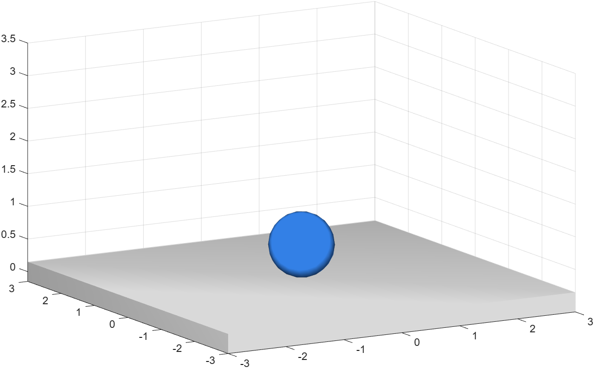

What PHX is, how to install it and your first running scene
PHX is a MATLAB® toolbox that lets you assemble a physical scene from rigid bodies, joints and forces, run it in time, and watch the result directly in a MATLAB 3-D plot.
Under the hood the motion is computed by the well-known Bullet physics engine, but as a
user you never touch it directly. You work only with the clean phx.*
objects — you create a body, give it a shape, optionally link it to other bodies, and run the
simulation. The toolbox takes care of collisions, gravity, friction and rendering.
What PHX is good for:
PHX is provided as a MATLAB toolbox (it requires MATLAB R2025a or newer). Once it is
installed, the phx package is on the path and ready to use —
just run one of the ready-made examples:
% run one of the ready-made examples
phxex_minimal
All examples live in the examples/ folder, from minimal scenes to
advanced ones (control, optimization, magnetism); they are all named
phxex_*. Some examples expect to be run from their own folder
(because of textures and STL models) — in that case switch the working directory first, e.g.
cd examples.
The simplest meaningful scene: a ball drops onto a solid floor. It shows everything essential — a dynamic body, a static body, a shape and how to run things.
% 3-D view and lighting clf; view(3); axis equal; grid on; camlight headlight; % falling ball (dynamic and massive by default) phx.Body("Position", [0 0 3], "Shape", {"Sphere", "Color", [.2 .5 .9]}); % static floor (never moves, only there for collisions) phx.Body("Type", "static", "Position", [0 0 0], ... "Shape", {"Box", "Size", [6 6 0.3]}); % assemble and run: 1.5 s in 150 steps sim = phx.Simulation; sim.step(1.5, 150, 1);

Type, it is
dynamic — it falls, collides and responds to forces. A
static body never moves (floors, walls, frames). A
kinematic body moves only in the way you prescribe (conveyors, arms).
step method works.phxdoc command, e.g.
phxdoc phx.Body.